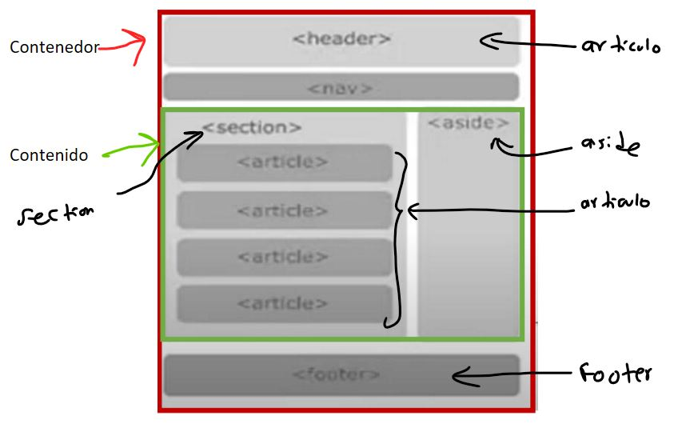

3/24/2023
CSS: hoja de estilo en cascada, lenguaje que permite dar un mejor aspecto visual a la pagina
estandar actual del CSS: CSS3
CSS: da stilo, color, posicion, alineacion, fuente de texto
Usando lo siguiente hace que toda las etiquetas tengan el texto con color rojo: h1{color: red;}
Ejemplo:
h1, h2, h3 { color: red; }
o lo que es lo mismo
h1 {color: red;}
h2 {color: red;}
h3 {color: red;}
Tipo de letra => font-family: "Arial"
Tipos de selectores:
- Selector universal (se le aplica a toda la pagina): *{atributo:valor;}
- Selector etiqueta: etiqueta{atributo:valor;}
- Selector clase (el nombre de la clase puede ser cualquier nombre): .clase{atributo:valor;}
- Selector identificador (el nombre del id puede ser cualquier nombre): #id{atributo:valor;}
- Selector descendiente (ejemplos de selectores: div,p,h1): selector1 selector2 selectorN {atributo:valor;}
...Del Selector descendiente: Un elemento es descendiente de otro cuando se encuentra entre las etiquetas de apertura y de cierre del elemento padre
Combinación de selectores: div, p {color:orange;} /* El estilo se aplica a todos los divs y párrafos */
Nombrar correctamente los selectores:
#div1, .div, divContent
/* Opción 1: Palabras separadas por mayúsculas */
navMenu { padding: 2em; border: 2px solid green; }
/* Opción 2: Palabras separadas por guiones */
nav-menu { padding: 2em; border: 2px solid green; }
Utilizar selectores descendientes:
Es conveniente utilizar selectores descendientes siempre que sea posible antes de crear un selector clase
o un selector identificador. De esta forma, el código estará más limpio, dispondrá de menos selectores clase
e identificador y se comprenderá mucho mejor.
div p { color: red; }
Utilizar propiedades abreviadas:
/* Propiedades margin-left, margin-right y margin-top */
.nav-menu {margin-left: 5px; margin-right: 5px; margin-top: 5px;}
/* Propiedad abreviada margin */
.nav-menu {margin: 5px 5px 0px 5px;}
Evitar utilizar como nombre de un selector una característica visual:
/* Selector con nombre que define la característica visual del color */
.menu-red { background: red; }
/* Utilizar mejor: */
.nav-menu { background: red; }
Very Important: Probar el diseño en los diferentes navegadores
Aplicar estilos CSS en un documento HTML:
<p style="color:green">Párrafo de color verde.</p>
Se puede poner el codigo CSS dentro del archivo CSS, este codigo debe estar dentro de la etiqueta <head></head>
de la forma siguiente:
<head>
<style>
/* Aqui va el codigo CSS */
</style>
</head>
Tambien se puede conectar el HTML con un archivo CSS lo que es en este caso una buena practica,
se debe crear primero un carpeta css, luego ahi poner los documentos tipo css:
<link rel="stylesheet" href="css/estilo.css">
El link anterior se pone en html dentro de la etiqueta head debajo del titulo:
<head>
<meta charset="UTF-8">
<meta http-equiv="X-UA-Compatible" content="IE=edge">
<meta name="viewport" content="width=device-width, initial-scale=1.0">
<title>Document</title>
<link rel="stylesheet" href="css/estilo.css">
</head>
El codigo CSS se guardo en el documento estilo.css
En CSS...:
margin: es para dar margen tanto arriba, abajo, izquierda y derecha
padding: es para el rellenowidth: para el ancho
height: para el alto
background-color: para el color del fondo en la etiqueta
Recuerda la pagina tiene un tipo y tamaño de letra ya definido
Comentario en HTML:
Se realizo el siguiente ejercicio:
- Aqui los documentos (index.html, css): https://github.com/andressantage/primera-maquetacion
- Aqui el resultado: https://andressantage.github.io/primera-maquetacion/
<!DOCTYPE html>
<html lang="en">
<head>
<meta charset="UTF-8">
<meta http-equiv="X-UA-Compatible" content="IE=edge">
<meta name="viewport" content="width=device-width, initial-scale=1.0">
<title>Practica de Maquetacion</title>
<link rel="stylesheet" href="css/estilo.css">
</head>
<body>
<div id="contenedor">
<div id="header">Header
</div>
<div id="nav">Nav
</div>
<div id="contenido">
<div id="section">Section
<article class="articulo">Articulo 1</article>
<article class="articulo">Articulo 2</article>
<article class="articulo">Articulo 3</article>
<article class="articulo">Articulo 4</article>
</div>
<div id="aside">Aside
</div>
</div>
<div id="footer">Footer
</div>
</div>
</body>
</html>*{
margin: 0;
padding: 0;
}
#contenedor{
width: 1200px;
height: 1000px;
background-color: white;
margin: 0.05em auto;
padding: 0.5em;
}
#header{
height: 15%;
background-color: coral;
margin: 1em;
border-radius: 1em;
}
#nav{
height: 10%;
background-color: blueviolet;
margin: 1em;
border-radius: 1em;
}
#contenido{
height: 56%;
background-color: white;
margin: 1em;
}
#footer{
height: 10%;
margin: 1em;
background-color: greenyellow;
border-radius: 1em;
}
#section{
height: 100%;
width: 70%;
background-color: orange;
margin-left: 0.05em;
border-radius: 1em;
float: left;
}
#aside{
height: 100%;
width: 29%;
background-color: yellow;
margin-right: 0.05em;
border-radius: 1em;
float: right;
}
.articulo{
height: 20%;
width: 96%;
background-color: blue;
border-radius: 1em;
margin: 1em;
}_________________________________________________